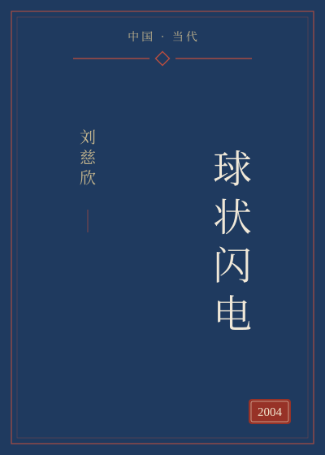
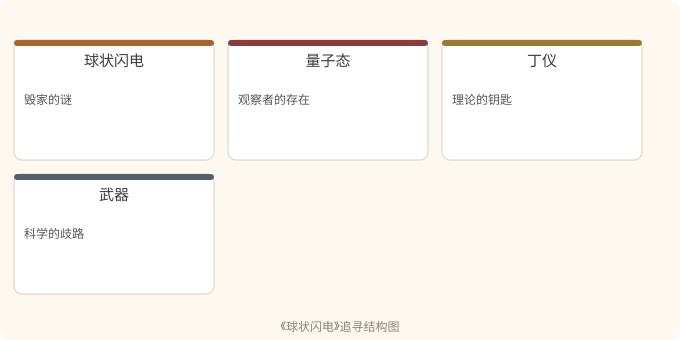

球状闪电
一、基本信息
| 作者 | 刘慈欣 |
|---|---|
| 成书/出版 | 2004年中文版出版（通说待核；作者页 B088 口径——major_works 载'球状闪电（2018英文版/2004中文版通说）'） Liu Cixin — Encyclopaedia Britannica（百科全书） |
| 国别/地区 | 中国 |
| 时代 | 现当代 · 当代 |
| 体裁 | 长篇科幻小说 |
| 语言 | 汉语（白话） |

《球状闪电》追寻结构图（主题·结构图）
二、创作背景
作者页（B088）：刘慈欣 major_works 载'球状闪电（2018英文版/2004中文版通说）'（B088 作者页定位，详见 santi 条核对）。
设定：球状闪电的量子态——'观察者'决定存在（通说待核）。
三、内容脉络
陈博士追寻毁掉父母婚姻的球状闪电——从气象到量子的真相（通说待核）。
与《三体》前传关系（丁仪人物——通说待核）。
四、主要人物表
| 人物 | 身份 | 说明 |
|---|---|---|
| 陈博士 | 研究者 | 追寻者（通说待核） |
| 丁仪 | 理论物理学家 | 跨书人物（通说待核） |
五、主题与艺术特点
- 量子世界的诗意设定（通说）。
- 科学浪漫主义（通说）。
- 武器化的灾难（通说待核）。
六、影响与评论
- 作者页：刘慈欣早期长篇（B088 作者页口径）。
Liu Cixin — Encyclopaedia Britannica（百科全书） - 《三体》前传（丁仪宇宙——通说待核）。
Liu Cixin — Encyclopaedia Britannica（百科全书）
七、阅读建议
难点
- 量子力学设定。
- 人物功能化。
- 《球状闪电》（四川科学技术出版社，通说待核）。
可独立读，或置于《三体》前。
八、待核实
- 2004年四川科技出版社初版核对。
- 陈博士/丁仪人名核对。
- 英文版2018年（Head of Zeus说）核对。
本页主要来源
刘慈欣的其他收录作品：三体